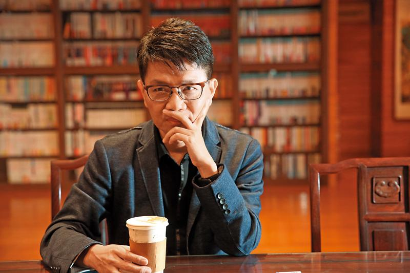
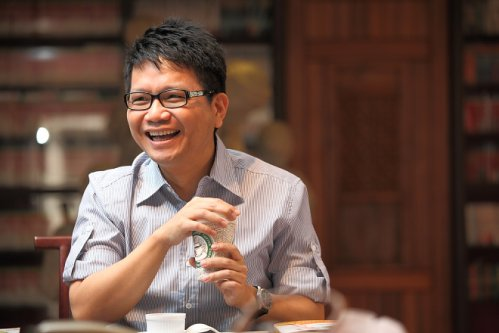
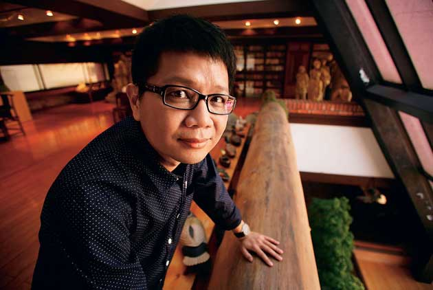
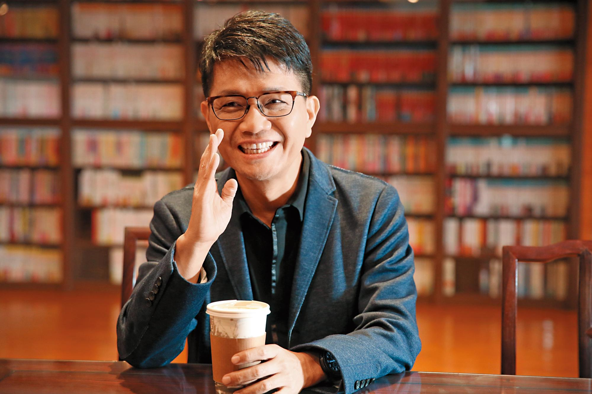

侯文詠
臺灣作家、醫師，曾榮獲省新聞處短篇小說首獎，中華文學獎、小說獎、散文獎，全國學生文學獎第五、六、七屆散文佳作及小說第三名和佳作，共計獲獎三次。寫作領域橫跨小說、散文、社會文學、評論, 並經常在廣播電台節目擔任特別來賓。出生於台南市新營區，父親是台南市新營區人，母親是嘉義縣東石鄉人。擁有內科、麻醉科專科醫師資格，曾任臺大醫院和萬芳醫院麻醉科主治醫師及臺北醫學大學醫學人文研究所副教授，目前專職寫作。

侯文詠出身於公務員背景的家庭，父親在新營糖廠工作，母親是小學老師。他自小對寫作產生興趣，小學時期就曾經自行創辦班刊和投稿，高中時期也曾經自願擔任校刊編輯工作；然而，當時的臺灣社會一般認為寫作是個「沒有前途」的職業。在父母、師長的壓力下，侯文詠進入醫學院就讀，並且成為一位醫師；但是他並沒有因此而放棄寫作。

侯文詠學業成績優異，卻不忘情寫作及出版「地上刊物」；為此遭受學校老師的責備，問他說：「你這麼聰明，為什麼不做點別的更有用的事情？」就讀興國中學時，有一次只考了「全班第13名」——據侯文詠說，這是他「考試史上從來沒有過的慘劇」——受此刺激，侯文詠索性停掉所有外務，專心課業，終於以優異的大學聯考成績錄取臺北醫學院醫學系（今臺北醫學大學）。侯文詠回憶：「爸爸很高興，在家門口掛起來一串鞭炮。僅管我再三違拗，他還是執意把鞭炮點燃。那是我最多愁善感的年代。在煙霧彌漫中，我有點感傷，覺得很不划算。我一直印象深刻，那時候，我想起我失去的青春時光再也回不來了。」

大學時期的侯文詠愛看電影，一年可以看上三百多場電影，大五創辦電影委員會，一度想輟學去當導演，因家人反對而作罷。畢業後進入臺大醫院實習；度過實習生涯後，為了持續寫作，他選擇了麻醉科。後來侯升任為主治醫師。這段期間，侯文詠仍不斷推出溫馨小品，包括《頑皮故事集》、《親愛的老婆》、《大醫院小醫師》、《離島醫生》，每一部都成為暢銷書。同時，他繼續進修，終於取得臺大醫學院臨床醫學博士學位。
侯文詠曾經擔任臺大醫院和萬芳醫院麻醉科主治醫師，以及臺北醫學大學醫學人文研究所副教授。在身為牙醫的妻子支持下，目前侯文詠辭退了醫療及教學等方面的工作，專心於文學創作。
他自五十歲起開始熱衷參與三鐵與馬拉松競賽，半程馬拉松最佳成績2小時24分43秒（2015年）。